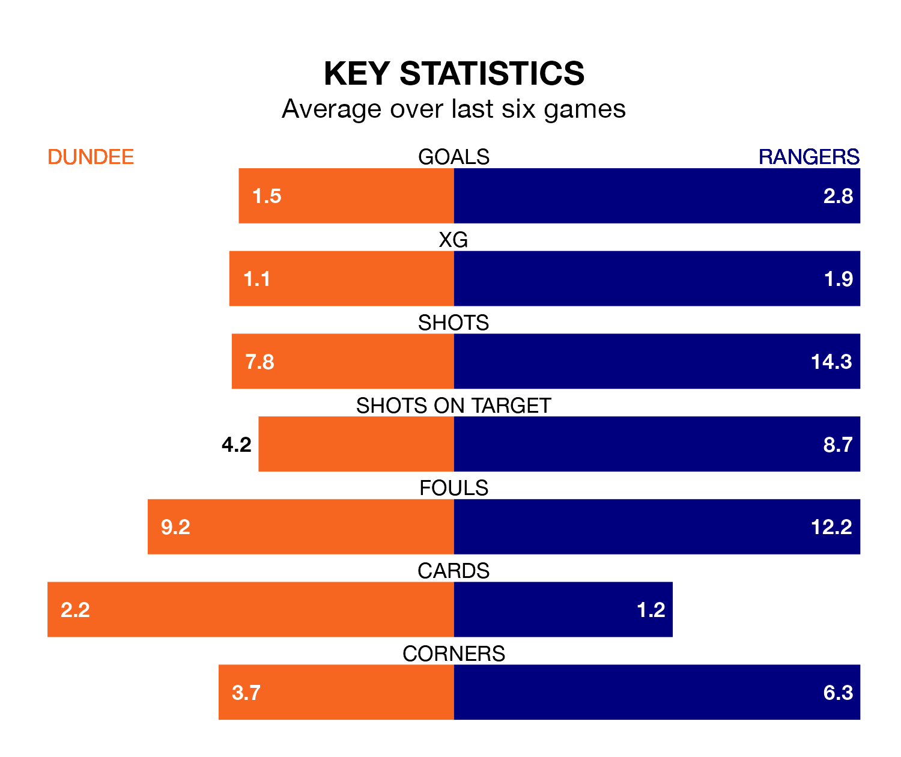

Wednesday's late match between Dundee and Rangers promises to be one for the neutrals, as two of the Premiership's most free-scoring sides go head-to-head.
Ahead of the game at Kilmac Stadium at Dens Park, the Dees and Rangers sit fourth and second in the goal-scoring charts, with 44 and 70 goals respectively.
Midfielder Luke McCowan leads the way for the home side, having bagged nine goals in their 31 games to date.
And James Tavernier has been the main man in the opponents' penalty box for Rangers, with 16 goals.
With Jack Butland between the sticks, Rangers can rely on one of the league's safest pair of hands. He has kept 17 clean sheets in his 31 appearances this season, and no 'keeper has prevented the opposition scoring more often in the Premiership.
In Dundee's net, Trevor Carson has eight clean sheets in 25 games. He has conceded a goal every 56 minutes, more than twice as often as the 140 minutes between goals for Butland.
The visitors are second in the table after 31 games, of which they have won 24 and drawn two, earning 74 points.
The Dees are four places behind Rangers in sixth, with 10 wins and nine draws putting them on 39 points.
In the last 10 years, Dundee and Rangers have played each other on 16 occasions. Dundee won two of them, Rangers 13, and they drew once.
On average, the Dees scored 0.6 goals and Rangers 2.5 in those matches.
Their last meeting was on December 9, when Rangers won 3-1 at home.
The home team are in mixed form in the Premiership, with two wins and a draw from their last six games.
With four wins and a draw over that period, Rangers's form is much better – they have taken 13 points from 18, compared to Dundee's seven.
Dundee's last match was on Saturday, a 3-2 loss against Motherwell, with Jordan McGhee and McCowan getting the goals for the Dees.
Rangers drew 3-3 with Celtic last time out, on Sunday, with Abdallah Sima, Rabbi Matondo and Tavernier on the scoresheet.
Wednesday's match will be refereed by Don Robertson, who has taken charge of 14 Premiership games so far this season, issuing four red cards and booking 46 players. He has awarded four penalties.
The last Dundee game Robertson refereed was a 3-0 home loss to Celtic on December 26. His last Rangers match was their 2-1 win at home against Aberdeen on February 6.
Updated: 14:47 (UTC), 09/04/24